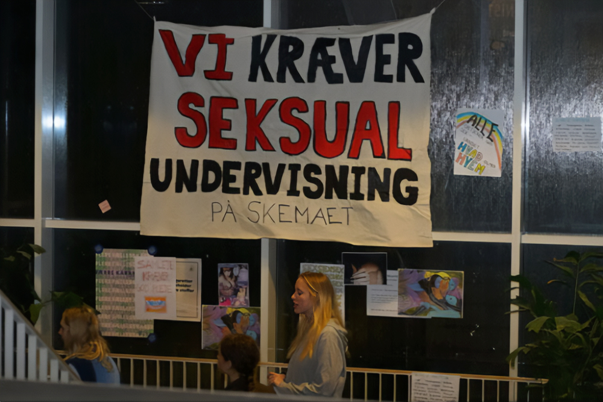
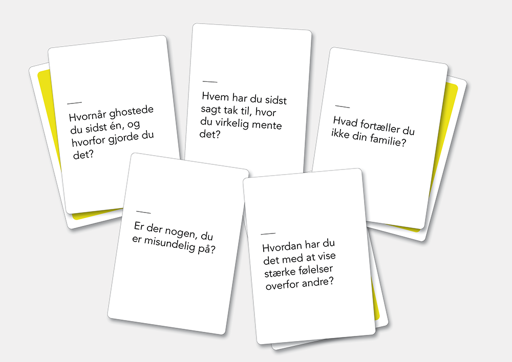

- Sex på skemaet
- Fanbrevet
- Har vi glemt samtalen?
- True crime
Kl. 9.00-12.30
Før du skriver
Til eleven
Til denne prøve i skriftlig fremstilling har du adgang til internettet.
Du må ikke kommunikere eller dele dine dokumenter med andre under prøven.
Hvis du i din tekst anvender informationer, citater, billeder, ressourcer fra internettet eller fra andre steder, skal du angive kilderne sidst i besvarelsen. Hvis du anvender kilder fra prøveoplægget, behøver du ikke at angive dem i din tekst.
Din tekst vurderes på, hvor godt du udfolder de tre vurderingsdimensioner funktion, indhold og form på en sammenhængende og meningsfuld måde i din tekst.
Se vurderingskriterierne nedenfor.
God arbejdslyst!
Vurderingskriterier til eleven
Der gives én karakter baseret på en helhedsvurdering af tre dimensioner: funktion, indhold og form.
|
Vurderings- dimension |
Vurderings- område |
Vurderingsspørgsmål |
| Funktion | Skrivesituation | I hvilken grad fungerer din tekst i den skrivesituation, som opgaven beskriver? |
| Opgavens krav | I hvilken grad opfylder du opgavens krav til afsender, modtager og fremstillingsformer? | |
| Indhold | Mening | I hvilken grad udtrykker din tekst et meningsfuldt indhold? |
| Ressourcer | I hvilken grad bruger du opgaveforlægget, din egen faglige viden og internettet i din tekst? | |
| Form |
Tekstsammen- hæng |
I hvilken grad hænger din tekst sammen sprogligt, og er der velvalgte afsnit og modaliteter? |
| Skrift og andre modaliteter | I hvilken grad bruger du tegnsætning, tekstbehandlingsprogrammets funktioner og ord, så det understøtter den situation, teksten skal bruges i? |
1. Sex på skemaet

Kilde: presse-foto.dk
En landsdækkende undersøgelse har vist, at mange unge synes, at seksualundervisningen i skolen ikke er god nok.
Din skole har nedsat et udvalg af elever og lærere, der skal evaluere seksualundervisningen på skolen. På vegne af din klasse skriver du til udvalget om jeres erfaringer og forslag.
|
Skriv til skolens udvalg. Som forberedelse skal du søge viden om seksualundervisning og inddrage den i din tekst. I din tekst skal du:
|
2. Fanbrevet
En fan er en person, der beundrer eller følger fx en youtuber, en sportsstjerne, en musiker, en influencer.
Hvem er du fan af?
Kilde: dr.dk
|
Skriv et brev til en person, du er fan af. Som inspiration kan du læse artiklen om Helena, der er fan af Tessa. I brevet skal du:
|
3. Har vi glemt samtalen?
SLUK & SNAK er et sæt samtalekort til unge om ungdomslivet. Samtalekortene er udviklet af 16-årige Mika Grue Sytmen.
Klik og hør Mika fortælle om tankerne bag.
Kilde: tv2.dk
Her ser du nogle af Mikas samtalekort:

![Køber du julegave til dine venner? VENSKAB. VENSKAB. Hvornår lod du sidst dit dårlige humør gå ud over en ven? SLUK & SNAK. Samtalekort til unge. SLUK & SNAK er et sæt samtalekort til unge om ungdomslivet - sluk telefonen og start en samtale. Samtalekortene er udviklet af Mika Grue Sytmen, et ungt menneske, som elsker at have samtaler med andre. Han mener, at unge mennesker kan miste evnen til at snakke sammen, hvis ikke de lægger deres mobiler væk en gang imellem. Lær hinanden bedre at kende inden for emnerne kærlighed, selvværd, venner og ensomhed. Dette er spillet, hvor ingen taber. Sådan spiller du: På hvert kort er der to spørgsmål. Den som trækker et kort, vælger selv et af de to spørgsmål og stiller til en anden. Kan både spilles af to eller en hel vennegruppe. Spillet består af 54 kort med 108 spørgsmål og 1 regelkort. Find flere spil på snakspil.dk. 12+ 1-5 timer](assets/snakspil_emballage.png)
Kilde: snakspil.dk
Du vælger at skrive til Mika, fordi du gerne vil opfordre ham til at lave nye kort, der kan hjælpe samtalen blandt unge i gang.
|
Skriv en mail til Mika. I din tekst skal du:
|
4. True crime
Kilde: dr.dk
Du er i praktik på et ungdomsmagasin. Du skal skrive en artikel til magasinets unge læsere for at gøre dem klogere på fascinationen af true crime-genren.
|
Skriv artiklen til ungdomsmagasinet. Som forberedelse skal du se videoen, søge yderligere viden om emnet og bruge det i din tekst. I din tekst skal du:
|
Det følgende er ikke en del af prøven:
Dette prøvesæt er omfattet af ophavsretten, jf. ophavsretslovens § 1.
Prøvesættet må alene anvendes til den på prøvesættet anførte prøve.
Al anden anvendelse af prøvesættet, herunder visning eller deling f.eks. via
internettet, sociale medier, portaler og bøger, udgør en krænkelse af Børne- og
Undervisningsministeriets og evt. tredjemands ophavsret og er ikke tilladt.
Overtrædelse af ophavsretten kan være erstatningspådragende og/eller strafbart.
Prøvesættet kan dog, efter at prøven er afsluttet, anvendes til undervisningsbrug på
uddannelser m.v. omfattet af den lovgivning, som Styrelsen for Undervisning og Kvalitet
administrerer.